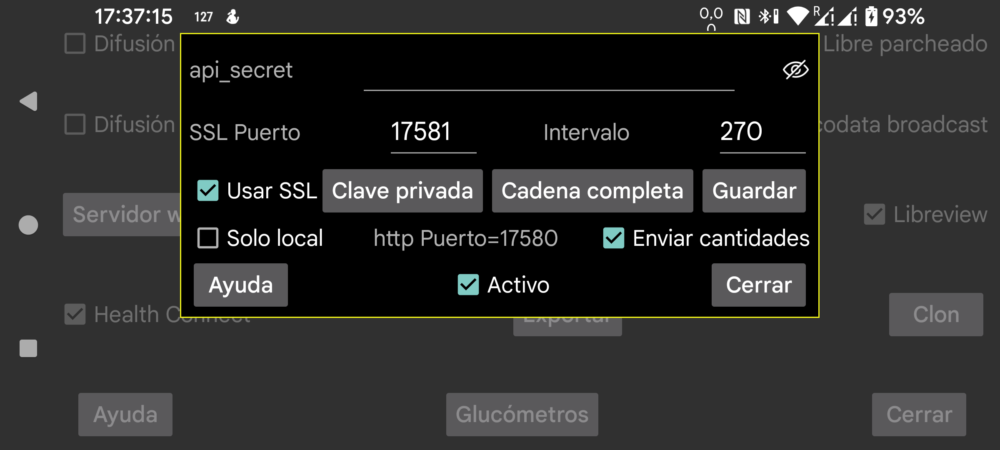

ar be de es fr hi nl pl ru sv tr uk uz zh en
Juggluco incluye un servidor web con el que otras apps pueden recibir valores de glucosa desde Juggluco. Puede usarse con relojes xDrip y con algunas apps Nightscout.
Las apps diseñadas para usar el servidor web de xDrip suelen ser fáciles de configurar: basta con activar Activo. Después pueden recibir glucosa desde localhost en el puerto 17580. URL de servidor Nightscout: http://127.0.0.1:17580.
Algunos seguidores de Nightscout también pueden usarlo. xDrip, Diabox, una app de glucosa flotante para Windows y el widget Owlet para Windows, Linux y macOS pueden funcionar por HTTP si Solo local no está activado. En macOS también ocurre con Nightscout Menu Bar, Gluco Status y Gluco Tracker. Nightscouter y LoopFollow para iOS, y Nightguard para iOS y WatchOS, también pueden usarlo por HTTP.
Si quieres acceder a Juggluco desde Internet, debes reenviar un puerto en tu módem o router. Consulta, por ejemplo, estas referencias o la ayuda de Clon → Añadir conexión.
Otros seguidores de Nightscout solo funcionan con HTTPS. Para ellos Juggluco necesita una clave SSL verificada para el nombre de dominio con el que se accede al servidor. Si tu IP externa tiene un nombre de host asociado, puedes obtener gratis un certificado con Certbot. Tras instalar Certbot y redirigir el puerto 80 hacia tu equipo, podrás generar el certificado y luego indicar a Juggluco la Private Key y la Full Chain.
Si lo único que quieres es enviar valores de glucosa de un Android a otro, normalmente es mejor usar la función Clon de Juggluco.
AAPS puede usarse con Juggluco 7.3.0 y posteriores. En AAPS debes seleccionar NSClientV3 y usar el api_secret configurado aquí como token de acceso de Nightscout. Desactiva Connect to websockets. En Synchronization desactiva todas las subidas y deja activadas solo las opciones para recibir o recuperar datos CGM, recibir insulina, recibir carbohidratos y aceptar tratamientos. Desactiva también todos los ajustes avanzados.
Si insertas cantidades con hora anterior a tratamientos ya existentes, AAPS puede recibir tratamientos duplicados. Esto también puede ocurrir cuando se usa la interfaz v3 con un servidor Nightscout que ya recibe cargas v3 desde Juggluco.
Las apps Android Diabetes:M, Nightwatch y Checkmate, así como Sugarmate para macOS/iOS y Xdrip4ios, Shuggah y Cockpit para iOS, necesitan SSL. En ellas debes indicar una URL del tipo https://hostname:puerto, donde hostname es el nombre del host para el que tienes la clave verificada y puerto es el puerto que has redirigido al puerto configurado en Juggluco (por defecto, 17581).
El servidor web también puede ejecutarse en un equipo Linux y recibir sus datos mediante una conexión clon desde un Juggluco que tenga Bluetooth con el sensor: https://www.juggluco.nl/Juggluco/cmdline .
api_secret: indica a los seguidores que usen este valor en el encabezado api-secret. También funciona cuando lo usan como token Nightscout o como secreto codificado en SHA1. Desde Juggluco 7.1.15, además, el api_secret puede ser el primer elemento de la ruta de la URL del servidor Nightscout. Por ejemplo, si el secreto es xyz y la URL es http://host:puerto, también puede usarse http://host:puerto/xyz. En Owlet esta es la única manera de usarlo.
Mostrar: hace visible el api_secret.
Puerto: puerto de red usado para acceder a este servidor. El valor predeterminado es 17581.
Guardar: guarda los cambios en api_secret o en el puerto.
Usar SSL: usa HTTPS. Para ello debes proporcionar a Juggluco una Private Key y una Full Chain válidas para el nombre de host usado.
Intervalo: intervalo mínimo predeterminado, en segundos, entre valores de glucosa. Normalmente es 270 segundos. Una petición de red también puede modificarlo con la opción interval=.
Activo: activa el servidor web.
Solo local: el servidor HTTP solo es accesible desde localhost. Esto no afecta a HTTPS.
Enviar cantidades: permite recibir las cantidades introducidas por HTTP, por ejemplo en http://localhost:17580/api/v1/treatments?count=3. Debes indicar para cada etiqueta qué debe hacerse con ella. Esto también se usa para enviar cantidades a Libreview. xDrip puede recibir tratamientos de Juggluco por esta interfaz, ya sea como Nightscout Follower o mediante Nightscout Sync (REST-API), aunque Juggluco no admite subidas desde xDrip.
Si Solo local no está activado, también puedes usar la IP doméstica del teléfono donde se ejecuta Juggluco. Si además has configurado el módem para redirigir el tráfico hacia ese puerto y has activado SSL con un certificado válido para un nombre de host accesible, podrás usar también ese nombre de host desde fuera de tu red.
Si quieres subir tratamientos a Diabetes:M, puedes enviar los datos de Juggluco a Libreview, guardarlos allí con Descargar datos de glucosa e importarlos en Diabetes:M mediante Data → Import from other sources → Freestyle. Otra posibilidad es obtener una clave verificada para el nombre de host externo de tu teléfono y añadir en Link external sources una fuente Nightscout con la URL https://tuhost:puerto, donde tuhost es el nombre de host del teléfono con Juggluco para el que has recibido una clave verificada y puerto es el puerto indicado aquí. Parece que no se sincroniza automáticamente, así que en Diabetes:M tendrás que pulsar Sync manualmente.
Activo: el servidor web está en ejecución.
Para más información sobre los comandos del servidor web Nightscout/xDrip implementados en Juggluco, consulta https://www.juggluco.nl/Juggluco/webserver.html.